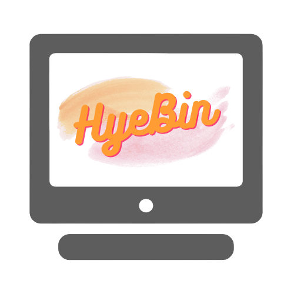

Hyebin
나만의 취향을 담은 홈페이지
제가 좋아하는 것들로 가득 채워가고 있는 홈페이지 입니다. 평소에 일기장처럼 쓰는 블로그, 공부기록을 담고있는 티스토리, 아직 제작중인 미니홈피에 접속할 수 있으며 귀여운 고양이의 사진을 볼 수 있습니다. 평소 즐겨보는 유튜브 영상을 하나씩 올리고 있습니다. 좋아하는 것들이 점점 많아지고 있기 때문에 지속적으로 업데이트가 될 예정이며 저의 취향을 함께 공유하고 싶어서 제작했습니다.